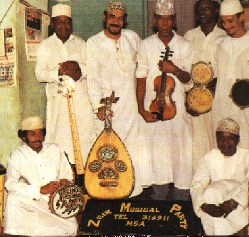
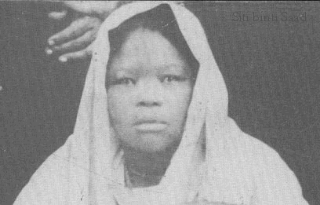
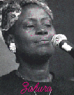

|
|
| Tarabu Music is a fusion of Swahili tunes sung in rhythmic poem spiced
with Arabic or at times Indian melodies. wherever the Swahili speaking people
travelled. Tarabu culture moved with them. No wonder it has penetrated to as far
as Uganda. Rwanda and Burundi in the interior of East Africa. In the Persian
Gulf, Dubai and Muscat play host to many groups of Tarabu who perform in these
capitals frequently.
 Traditionally, Tarabu used to be performed at weddings and social gatherings like circumcision rites for infant boys or during the attainment of maiden hood for girls or during Eid celebrations. In recent times, politicians have taken advantage of Tarabu's popularity among the masses to effectively use it as a tool for political campaigning. The Swahili language which is a medium for Tarabu poetic singing has two equally important roots, Arabic and Eastern Bantu Langauge. The Swahilis have made a strongly individual culture out of other people. Tarabu reflects the cosmopolitan qualities of a multiracial people. It is different from the main stream of African Music, in that at a later stage, its melody lines are long and the vocal style is like Arab or at times Indian singing. An American Tarabu researcher, John S. Roberts in his commentary on original music summed up this way "Like most complex and living things, in fact, Tarabu refuses to be thrust into neat bags. It is an extremely lively art form springs from a classical culture, still immensely popular drawing all the time from old and new sources, a major part of social life of the Swahili people". In the Nineteen Thirties and Forties, the instruments mainly used, were Arab oud or Udi in Swahili, which is a form of lute, the Darbuk, a pottery drum with a leather head, Gannon, a Middle Eastern Zither, Fiddle, Tambourine and Rattle. Nowadays although the basic singing style is still the same, there is much more flexibility and variety than there ever was. New instruments have been introduced, Violin, Guitar, Accordion, keyboard and drums. Since the early Twentieth Century, Zanzibar an autonomous island loosely joined with mainland Tanzania has taken the lead in Tarab organisational skills and presentation closely followed by Dares-salaam and Mombasa on the Kenyan Coast respectively.

The most dynamic and famous Tarabu singer of our time this century, was the late Sitti Bint Saad of Zanzibar who traversed the length and width of East Africa in thirties and forties entertaining dignitaries and ordinary folks alike. She even visited Bombay the then capital of India for recording as such facilities were non-existent in Africa South of the Sahara. Her voice has come to symbolize the very essence of Swahili Music. Her voice has enriched people's lives ennobled them with the truth and beauty.During her time, Sitti was compared to the legendary Egyptian singer the late Ummu Kulthoum or Lata mangeshkar of India. In the late fifties another singer who went on to capture the hearts of coastal people in East Africa and beyond was Ustadh Bakari Abeid a Zanzibar and Ustadh Ali Mkali of Mombasa, Kenya. "Professor" of music Maalim Seif Salim of Zanzibar continues to delight crowds wherever he performs and remains the best known music maestro today who commands great respect among the people. He leads a high ly cultured and reputable orchestra lkhwan Saffa established in 1905 in Zanzibar International Connection Local artists who had acquired international recognition and made in roads in Tarabu Music in the Arabian Gulf in recent years and made a great impact there, among others, is the sensational Tanzania singer Asya EI-kindy based in Oman a bilingual who is eloquent in both Kiswahili and Arabic singing. There was also Ustadh Ali-Wa-Leila the gifted Oud guitarist who left Mombasa for the United Arab Emirates in the early sixties after an invitation. It should also be noted that Ustadh Zein-EI- Abideen, currently, arguably the best oud player in East Africa and respected even beyond African shores, acquired his skills through Wa-Leila's tutelage. Records Warner Graebner; the German Music promoter in his 1989 anthology called 'Globe Style"
 Zuhura Swaleh explains what Taarab is? "Taarab is a type of Swahili music with a long tradition and also they is lot to be gained from it.Because taarab discusses the life of humanbeings in every way,like to help a person to get over the grief when someone has died.There other songs that may calm your soul by showing you that everything that happens in your life is arranged by God.To help in a desperate situation,you may be poor,and maybe really downtrodden,you may think about eating poison. There tarab songs for comfort,showing you that it is not only you who is trouble ,it is this world. There love songs,there comical songs,to make you happy.Taarab songs are really a collection of all different kinds of things in the life of humans,taarab is an explanation of life.This is its value" As the new crop of Tarabu Musicians in East Africa continue to swell, it is most likely, Tarabu adherents will continue to be thrilled and entertained with poetic and melodious songs for years to come.
|